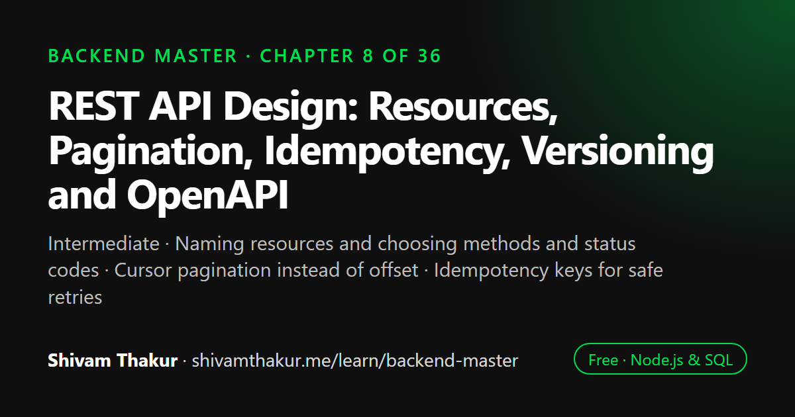

Chapter 8 of 36 · Intermediate
REST API Design: Resources, Pagination, Idempotency, Versioning and OpenAPI
REST API Design — Resources, Pagination, Idempotency, Versioning and Contracts

A good REST API is predictable, safe to retry and easy to evolve. This chapter covers resource naming, cursor pagination, filtering, idempotency keys, optimistic concurrency with ETags, versioning, consistent problem+json errors and documenting the contract with OpenAPI.
In this chapter you will learn
- Naming resources and choosing methods and status codes
- Cursor pagination instead of offset
- Idempotency keys for safe retries
- ETag and If-Match for optimistic concurrency
- Versioning and OpenAPI contracts
8.0 Why This Chapter Matters
Anyone can make an endpoint that works. Designing an API that other people can use correctly without asking you questions, that survives years of change without breaking customers, and that stays safe when networks misbehave is a craft.
An API is a product. Its users are developers (including future you). Once a mobile app ships with your API baked in, you cannot recall it: old app versions keep calling you for years. A careless rename today is an outage for a million phones tomorrow.
This chapter teaches the decisions that separate a tidy API from a painful one:
- How to name and shape resources and URLs.
- How to design JSON that ages well (dates, money, IDs, nulls).
- A single, machine-readable error format (RFC 9457).
- Pagination that works on a billion rows (cursor/keyset, not
OFFSET). - Idempotency keys so retries never double-charge.
- Optimistic concurrency with
ETag+If-Match. - Versioning and deprecation without breaking clients.
- OpenAPI documentation as a contract.
Every pattern in the sections marked tested was run against a real server while this chapter was written; the outputs you see are real.
8.1 What "REST" Means in Practice
REST describes a style built from constraints. The ones that matter for you day to day:
| Constraint | Meaning | Why you care |
|---|---|---|
| Client-server | UI and data/logic are separate | Frontend and backend evolve independently |
| Stateless | Each request carries everything needed; the server keeps no session memory between requests | Any server instance can handle any request → scale horizontally (Chapter 29) |
| Cacheable | Responses say whether they may be cached | Free performance (Chapter 3) |
| Uniform interface | Same few methods, resource URLs, standard status codes | Predictability; tooling works everywhere |
| Layered system | Clients can't tell if they hit a proxy/CDN/gateway | You can add infrastructure transparently |
Richardson Maturity Model: a useful ladder
| Level | Description | Example |
|---|---|---|
| 0 | One endpoint, one method; everything is RPC over POST | POST /api {"action":"getProduct"} |
| 1 | Resources: many URLs | POST /products/42 |
| 2 | HTTP verbs + status codes | GET /products/42 → 200/404 |
| 3 | Hypermedia: responses include links to next actions | {"_links": {"buy": "/orders"}} |
Most good production APIs live at Level 2. Level 3 (HATEOAS) is elegant but rarely worth it for typical product APIs (see §8.14). Target Level 2 and do it well.
8.2 Designing Resources and URLs
The mindset shift: nouns, not verbs
A resource is a thing your system knows about: a product, an order, a user, a review. The URL names the thing; the HTTP method says what to do with it.
❌ GET /getAllProducts ✅ GET /products
❌ POST /createProduct ✅ POST /products
❌ POST /deleteProduct?id=5 ✅ DELETE /products/5
❌ GET /product/5/getReviews ✅ GET /products/5/reviewsNaming rules that prevent arguments
- Plural nouns for collections:
/products,/orders. A single item is/products/42. (Pick plural everywhere; consistency beats any theory.) - Lowercase, hyphen-separated for multi-word paths:
/order-items, not/orderItemsor/Order_Items. (URLs are case-sensitive; hyphens read well and are SEO/URL friendly.) - No verbs, no file extensions (
/products.json; useAcceptinstead). - No trailing slash differences: choose one and redirect/normalize the other.
- IDs in the path identify; query strings filter.
/products/42vs/products?category=pens. - Identifiers are opaque to clients. Don't promise they're sequential integers; a UUID or prefixed string (
ord_8fK2x) leaks less and survives sharding.
Relationships and nesting
GET /products/42/reviews reviews belonging to product 42
POST /products/42/reviews add a review to product 42
GET /users/7/orders orders of user 7Keep nesting shallow, at most two levels. /users/7/orders/9/items/3/shipments/2 is brittle and unreadable. Once a child has its own identity, expose it at the top level too:
GET /orders/9 ← the order is addressable directly
GET /orders/9/items ← one level of nesting is fine"But what about actions?" (non-CRUD operations)
Real systems have operations that aren't plain create/read/update/delete: cancel an order, publish a post, reset a password, refund a payment. Three accepted styles:
1. Model the action as a sub-resource you create (preferred; very RESTful):
POST /orders/9/cancellation → 201 Created (a cancellation record now exists)
POST /payments/55/refunds → 201 Created (and you can GET /payments/55/refunds)2. State change via PATCH:
PATCH /orders/9 { "status": "cancelled" } (server validates the transition)3. A verb sub-path for true commands (pragmatic; used by Stripe, GitHub and others):
POST /orders/9/cancel
POST /users/7/reset-passwordAll three are acceptable. Choose one convention per API, document it, and use it consistently. The mistake is mixing POST /cancelOrder, PUT /orders/9/cancelled, and PATCH /orders/9/status in the same API.
8.3 Mapping Operations to Methods and Status Codes
The standard CRUD table for a products collection, each result tested in this chapter's server:
| Operation | Request | Success | Common failures |
|---|---|---|---|
| List | GET /products |
200 + page of items |
400 bad query |
| Read one | GET /products/42 |
200 (+ETag) |
404 |
| Create | POST /products |
201 + Location: /products/43 + body |
422 invalid, 409 duplicate |
| Replace | PUT /products/42 |
200 (or 204) |
404, 412, 422 |
| Partial update | PATCH /products/42 |
200 + updated body |
404, 412, 422 |
| Delete | DELETE /products/42 |
204 |
404 (or 204 again; see below) |
| Action | POST /orders/9/cancel |
200/202 |
409 wrong state |
Decisions people argue about (here are good defaults)
- DELETE of something already deleted:
404is honest;204is "idempotent-friendly" (the end state is the same). Either is fine; pick one. - PUT creating if missing: allowed by HTTP (returns
201), but most APIs makePUTupdate-only to avoid accidental creation. - Return the body after POST/PATCH? Yes. It saves clients a second request and shows server-assigned fields (id, timestamps, defaults).
202 Acceptedfor work that continues in the background (§8.11).409 Conflictfor state conflicts (duplicate email, cancelling a shipped order);422for invalid data.
8.4 Designing Good JSON
The shape of your JSON is a long-term promise. Decide these once.
Conventions
| Topic | Recommendation | Why |
|---|---|---|
| Field names | camelCase (JS-friendly) or snake_case (if your ecosystem prefers); never mix |
Consistency |
| IDs | Strings ("id": "ord_8fK2x" or UUID) |
JS can't safely hold 64-bit integers (Number.MAX_SAFE_INTEGER is 2⁵³−1); strings are future-proof |
| Dates & times | ISO 8601 in UTC: "2026-11-03T09:30:00Z" |
Unambiguous, sortable, every language parses it. Never "03/11/26" (is that March 11?) |
| Money | Integer in the smallest unit + currency: { "amount": 89900, "currency": "INR" } |
Floating point can't represent 0.1 + 0.2 exactly. Never store money as floats |
| Booleans | true/false; name positively (isActive) |
Avoid "yes"/1 |
| Enums | Lowercase strings: "status": "shipped" |
Readable, extensible |
| Absent vs null | Define: omit unknown fields or send null; document which |
undefined isn't JSON |
| Collections | Always an array ([] when empty), never null |
Clients can .map safely |
| Envelope | Collections wrapped: { "data": [...], "page": {...} }; single resources returned bare |
Room for metadata without breaking clients |
| Extensibility | Clients must ignore unknown fields | Lets you add fields without versioning |
The money bug everyone writes once
0.1 + 0.2 // 0.30000000000000004
19.99 * 100 // 1998.9999999999998Represent ₹899.00 as 89900 (paise) and format only at display time. A million small rounding errors in a payments system become an audit finding.
Representation example
{
"id": "prd_3kLm9",
"name": "Backpack",
"price": { "amount": 89900, "currency": "INR" },
"stock": 12,
"status": "active",
"createdAt": "2026-11-03T09:30:00Z",
"updatedAt": "2026-11-03T09:45:12Z"
}What NOT to expose
Only return what clients need. Never leak internal columns (passwordHash, costPrice, internalNotes, isAdmin). Map database rows to response objects explicitly (or use response schemas; Chapter 7).
Postel's Law, reversed for security
"Be liberal in what you accept" is dangerous for APIs. Prefer: accept only what you document (strict validation), return exactly what you document. Tolerance belongs in clients (ignoring unknown response fields).
8.5 One Error Format: Problem Details (RFC 9457)
Chapter 6 gave us a consistent { error: { message, details, requestId } }. There's an actual internet standard for this: Problem Details for HTTP APIs, now RFC 9457 (which replaced RFC 7807). Using a standard means clients and tools already know how to read your errors.
HTTP/1.1 422 Unprocessable Content
Content-Type: application/problem+json
{
"type": "https://api.shopline.com/problems/validation",
"title": "Validation failed",
"status": 422,
"detail": "price must be >= 0",
"instance": "/v1/products",
"errors": [ { "field": "price", "message": "must be >= 0" } ]
}| Member | Meaning |
|---|---|
type |
A URI identifying the kind of problem (can point to docs). about:blank if nothing more specific |
title |
Short, human-readable summary of the problem type (stable) |
status |
The HTTP status (repeated for convenience) |
detail |
Explanation of this occurrence |
instance |
Identifies this specific occurrence (the request URL or an ID) |
| extensions | Any extra members you need (errors, requestId, retryAfter...) |
Implementation (tested)
class ApiError extends Error {
constructor(status, title, detail, extra = {}) {
super(title);
Object.assign(this, { status, title, detail, extra });
}
}
app.use((err, req, res, _next) => {
const status = err.status ?? err.statusCode ?? 500;
res.status(status).type('application/problem+json').json({
type: 'about:blank',
title: err.title ?? err.message,
status,
detail: status >= 500 ? undefined : err.detail ?? err.message, // hide 5xx internals
instance: req.originalUrl,
...err.extra,
});
});Real response from the test server:
curl -si "localhost:3000/v1/products?after=zzz"
# HTTP/1.1 400 Bad Request
# Content-Type: application/problem+json; charset=utf-8
# {"type":"about:blank","title":"Invalid cursor","status":400,
# "detail":"The cursor is malformed or expired","instance":"/v1/products?after=zzz"}Whether you adopt RFC 9457 exactly or keep your own shape, the principles hold: one shape for every error, a stable machine-readable identifier clients can switch on (not just a message string), a human message, and enough context to debug.
Design errors for the programmer who will read them
Bad: { "error": "Invalid" }
Good: tells what is invalid, where, and how to fix it, without leaking internals.
8.6 Pagination (the one that bites at scale)
Never return an unbounded list. Millions of rows in one response kills your server and the client. There are three techniques.
8.6.1 Offset pagination: ?page=3&limit=20
SELECT * FROM products ORDER BY id LIMIT 20 OFFSET 40;- ✅ Simple; supports "jump to page 50"; easy to show page numbers.
- ❌ Slow on deep pages: the database must read and discard all the skipped rows.
OFFSET 1000000reads a million rows to return 20. Cost grows with the page number (O(offset)). - ❌ Unstable under change: if a row is inserted while the user pages, items shift: they see a duplicate on page 2 or miss one entirely.
Use it for small, mostly static datasets and admin tables.
8.6.2 Cursor (keyset) pagination: ?limit=20&after=<cursor>
Instead of "skip N rows," say "give me the rows after this one":
SELECT * FROM products WHERE id > $lastSeenId ORDER BY id LIMIT 21; -- fetch 1 extraWith an index on id, the database jumps straight to the right spot (O(log n) + page size) regardless of how deep you are. And it's stable: inserts elsewhere don't shift your position.
The cursor is an opaque token encoding where you stopped. Clients must treat it as a black box; you can change its contents later without breaking anyone.
Tested implementation:
const encode = (o) => Buffer.from(JSON.stringify(o)).toString('base64url');
const decode = (s) => {
try { return JSON.parse(Buffer.from(s, 'base64url').toString()); }
catch { throw new ApiError(400, 'Invalid cursor', 'The cursor is malformed or expired'); }
};
function pageOf(list, { limit, after }) { // list is sorted by id ascending
let start = 0;
if (after) {
const { id } = decode(after);
start = list.findIndex((p) => p.id > id);
if (start === -1) start = list.length;
}
const slice = list.slice(start, start + limit + 1); // fetch ONE extra to learn if more exist
const hasMore = slice.length > limit;
const data = slice.slice(0, limit);
return { data, page: { limit, hasMore, nextCursor: hasMore ? encode({ id: data.at(-1).id }) : null } };
}Walking all 7 items, 3 per page (real output, trimmed):
GET /v1/products?limit=3
→ data: [1,2,3] page: { limit:3, hasMore:true, nextCursor:"eyJpZCI6M30" }
GET /v1/products?limit=3&after=eyJpZCI6M30
→ data: [4,5,6] page: { limit:3, hasMore:true, nextCursor:"eyJpZCI6Nn0" }
GET /v1/products?limit=3&after=eyJpZCI6Nn0
→ data: [7] page: { limit:3, hasMore:false, nextCursor:null }(eyJpZCI6M30 is just {"id":3} in base64url. Encoding it makes it opaque, though it's not secret. If tampering matters, sign or encrypt the cursor.)
Sorting by something non-unique (price, created time): the cursor must carry a tie-breaker. Sort by (price, id) and encode both: WHERE (price, id) > ($p, $i) ORDER BY price, id. Without the unique tie-breaker, rows with equal prices can be skipped or repeated.
8.6.3 Link-header / "next" URL style
Instead of nextCursor, return the full next URL: "next": "/v1/products?limit=3&after=eyJ...". Clients just follow it, even simpler. (GitHub's API uses Link headers for this.)
Comparison
| Offset | Cursor/Keyset | |
|---|---|---|
| Jump to page N | ✅ | ❌ (sequential only) |
| Performance deep in the list | ❌ O(offset) | ✅ O(log n) |
| Stable under inserts/deletes | ❌ | ✅ |
| Total count | Easy (but COUNT(*) can be slow) |
Usually omitted |
| Best for | Small/admin lists | Feeds, infinite scroll, large tables, public APIs |
Rules for every paginated endpoint
- Default and maximum
limit(e.g., default 20, max 100); validate it (Chapter 7). - Always apply a deterministic ORDER BY. Without one, pages are arbitrary.
- Return
hasMore/nextCursor, not just data. - Total counts are expensive on large tables; provide them only if truly needed (or approximate).
8.7 Filtering, Sorting, Searching and Field Selection
GET /products?category=pens&maxPrice=5000&inStock=true filter
GET /products?sort=-price,name sort: price descending, then name
GET /products?q=notebook free-text search
GET /products?fields=id,name,price sparse fieldsets (smaller payloads)
GET /orders?createdAfter=2026-11-01T00:00:00Z date rangeGuidance:
- Whitelist filterable and sortable fields; map them to indexed columns. Never pass
?sort=straight into SQL (injection!). Chapter 13. - Prefix
-for descending is a common convention; document it. - Multiple values:
?status=paid,shipped(comma) or repeated params (?status=paid&status=shipped). Choose one. - Complex filters (nested AND/OR) are where REST gets awkward; consider a
POST /products/searchwith a JSON body, or GraphQL (Chapter 9). - Search (
q) on large text belongs in a search engine (Chapter 20), notLIKE '%x%'.
8.8 Idempotency Keys: Making Retries Safe
The problem (from Chapter 3, now solved)
client ── POST /orders ──▶ server charges card, creates order
✕ response lost (timeout / dropped connection)
client doesn't know what happened → retries → ORDER #2, CHARGED TWICEGET, PUT, DELETE are naturally idempotent. POST is not. The fix is an Idempotency-Key: a unique token (UUID) the client generates per logical operation and sends in a header. The server remembers the result for that key.
The server's rules
| Situation | Server response |
|---|---|
| First time seeing this key | Process normally; store the response under the key |
| Same key, same body, original finished | Replay the stored response (and mark it Idempotent-Replayed: true) |
| Same key, different body | 422: the client is misusing keys |
| Same key, original still running | 409: try again shortly |
| No key on an endpoint that requires it | 400 |
Tested implementation
import { createHash } from 'node:crypto';
const idem = new Map(); // key → { fingerprint, state, status, body } (Redis in production!)
function idempotency(req, res, next) {
const key = req.get('Idempotency-Key');
if (!key) return next(new ApiError(400, 'Idempotency-Key required',
'Send an Idempotency-Key header on POST /orders'));
const fingerprint = createHash('sha256').update(JSON.stringify(req.body ?? {})).digest('hex');
const seen = idem.get(key);
if (seen) {
if (seen.fingerprint !== fingerprint)
return next(new ApiError(422, 'Idempotency-Key reuse', 'This key was already used with a different request body'));
if (seen.state === 'processing')
return next(new ApiError(409, 'Request in progress', 'The original request is still being processed'));
res.set('Idempotent-Replayed', 'true');
return res.status(seen.status).json(seen.body); // replay
}
idem.set(key, { fingerprint, state: 'processing' }); // claim the key BEFORE doing work
const send = res.json.bind(res);
res.json = (body) => { // capture the response once produced
idem.set(key, { fingerprint, state: 'done', status: res.statusCode, body });
return send(body);
};
next();
}
v1.post('/orders', idempotency, async (req, res) => {
await chargeCardAndSaveOrder(req.body); // runs ONCE per key
res.status(201).json({ id: ++orderSeq, items: req.body.items });
});Real results:
curl -si -H 'Idempotency-Key: k1' --json '{"items":[1,2]}' localhost:3000/v1/orders
# HTTP/1.1 201 Created {"id":101,"items":[1,2]}
curl -si -H 'Idempotency-Key: k1' --json '{"items":[1,2]}' localhost:3000/v1/orders
# HTTP/1.1 201 Created Idempotent-Replayed: true {"id":101,"items":[1,2]} ← same order id, NOT 102
curl -s -H 'Idempotency-Key: k1' --json '{"items":[9]}' localhost:3000/v1/orders
# 422 Idempotency-Key reuse
# two identical requests fired at the same instant:
# 409 Request in progress | 201 {"id":101,...}The last line is the interesting one: two concurrent identical requests produced one order, not two, because the first request claimed the key before doing any work.
Production caveats (important)
- The store must be shared and durable (Redis or the database) not an in-memory
Map. Otherwise a restart, or a second server instance, forgets keys. - The claim must be atomic. In a real store, use an atomic "set if not exists" (
SET key value NXin Redis,INSERT ... ON CONFLICT DO NOTHINGin SQL). Two instances checking-then-writing separately can both "win" (a race condition; Chapter 16). - Expire keys (e.g., after 24 hours).
- Scope keys per user/account so one customer can't collide with, or replay, another's.
- Best of all: make the business operation itself idempotent with a database unique constraint (e.g.,
UNIQUE(user_id, idempotency_key)on the orders table). The constraint is the real guard; the middleware is a convenience. - Failures: decide whether to store error responses. Commonly, store deterministic results (success and 4xx) but not transient 5xx so clients can retry for real.
8.9 Optimistic Concurrency: ETag + If-Match
Two staff members open the same product in an admin panel. Both change it and save. Without protection, the second save silently overwrites the first (the "lost update").
Solution: attach a version to each representation, and require clients to say which version they're updating.
GET /products/1
◀── 200 ETag: "1" { "id":1, "price":10 }
PATCH /products/1 If-Match: "1" { "price": 99 }
◀── 200 ETag: "2" ← succeeded; version bumped
PATCH /products/1 If-Match: "1" { "price": 5 } (a second editor with stale data)
◀── 412 Precondition Failed ← "it changed since you read it"| Situation | Status |
|---|---|
If-Match matches the current version |
200 and a new ETag |
If-Match doesn't match |
412 Precondition Failed |
If-Match missing but required |
428 Precondition Required |
Tested implementation:
v1.get('/products/:id', (req, res) => {
const p = find(req.params.id);
res.set('ETag', `"${p.version}"`).json(p);
});
v1.patch('/products/:id', (req, res) => {
const p = find(req.params.id);
const ifMatch = req.get('If-Match');
if (!ifMatch) throw new ApiError(428, 'Precondition required', 'Send If-Match with the ETag you last read');
if (ifMatch !== `"${p.version}"`) throw new ApiError(412, 'Precondition failed',
'The product changed since you read it. Re-fetch and retry.');
Object.assign(p, req.body, { version: p.version + 1 });
res.set('ETag', `"${p.version}"`).json(p);
});Real output:
PATCH (no If-Match) → 428 Precondition required
PATCH If-Match "1" → {"id":1,"name":"Item 1","price":99,"version":2}
PATCH If-Match "1" (stale) → 412 Precondition failedIn the database this is a single atomic statement (Chapter 16):
UPDATE products SET price = $1, version = version + 1
WHERE id = $2 AND version = $3; -- 0 rows updated ⇒ someone else got there firstThis is called optimistic locking: assume conflicts are rare, detect them cheaply, no locks held while the user thinks.
8.10 Long-Running Operations: 202 Accepted
Some work takes too long for one request: generating a 10,000-row report, processing a video, bulk import. Don't make the client wait with a connection open (timeouts, load balancers cut at 30–60 s).
POST /reports { "type": "sales", "month": "2026-10" }
◀── 202 Accepted
Location: /reports/rpt_77 ← where to check
{ "id": "rpt_77", "status": "queued" }
GET /reports/rpt_77 (client polls, ideally honoring Retry-After)
◀── 200 { "status": "running", "progress": 40 }
...
GET /reports/rpt_77
◀── 200 { "status": "done", "downloadUrl": "https://files.shopline.com/rpt_77.csv" }The job runs on a worker consuming a queue (Chapter 28). Alternatives to polling: webhooks (the server calls the client when done; Chapter 10) or Server-Sent Events. The status resource, with queued → running → done | failed, is the key idea.
8.11 Versioning and Evolving Without Breaking Anyone
What counts as a breaking change?
| Breaking (needs a new version) | Non-breaking (safe to ship) |
|---|---|
| Removing or renaming a field | Adding a new optional response field |
| Changing a field's type or meaning | Adding a new endpoint |
| Making an optional request field required | Adding an optional request parameter |
| Changing URL structure or status-code semantics | Adding a new enum value (only if clients were told to tolerate unknown values) |
| Tightening validation that used to pass | Loosening validation |
| Changing default sort/pagination behavior | Adding new error codes (in documented categories) |
The cheapest versioning strategy is never breaking. Add fields, don't change them; be conservative in what you promise. Clients that ignore unknown fields keep working.
Where to put the version
| Style | Example | Pros | Cons |
|---|---|---|---|
| URL path | /v1/products |
Visible, trivial to route & cache & test in a browser | "Pollutes" URLs; whole-API versions |
| Header | API-Version: 2026-11-01 |
Clean URLs; date-based versions per account (Stripe) | Hidden; harder to test casually |
| Media type | Accept: application/vnd.shopline.v2+json |
Pure-REST approach | Clunky; poor tooling |
| Query | /products?version=2 |
Easy | Messy with caching |
Recommendation for most teams: URL path versioning (/v1), bumped rarely (only for breaking changes), with additive changes made in place. In Express it's one line, and it's what we tested:
const v1 = express.Router();
v1.get('/products', listProducts);
app.use('/v1', v1);
// later: app.use('/v2', v2Router) ← v1 keeps working, unchangedDeprecation done kindly
- Announce in docs and changelog, with dates.
- Send headers on deprecated endpoints:
Deprecation: true(standardized as RFC 9745) andSunset: Wed, 01 Jul 2027 00:00:00 GMT(RFC 8594), plus aLink: <https://docs.shopline.com/migrate-v2>; rel="sunset". - Measure usage per version & client (logs/metrics) so you know who still depends on it before turning it off.
- Contact the biggest stragglers directly. Then sunset.
Mobile apps make this hard: old versions linger for years. Plan to support old API versions for a long time, or force-update the app.
8.12 Rate Limits, Caching and Other Headers
Communicate limits so clients can behave:
RateLimit: limit=100, remaining=87, reset=34 (draft IETF standard; we saw this in Chapter 7)
Retry-After: 59 (on 429 and 503)Caching (Chapter 3 applied): GET collections and resources can carry Cache-Control/ETag. Personalized responses → private or no-store. Add Vary for headers that change the response (Accept-Language, Authorization).
Always also return the X-Request-Id (Chapter 6/7) so support can trace any call.
8.13 Bulk Operations and Batching
Network round trips are the enemy (Chapter 2). If clients commonly need 50 things, don't make them call 50 times.
- Bulk read:
GET /products?ids=1,2,3(bounded list). - Bulk write:
POST /products/bulkwith an array. Decide semantics: all-or-nothing (transaction) or per-item results. Per-item is common:207 Multi-Statusstyle, or200with{ results: [{ index, status, error? }] }. - Batch endpoint (
POST /batch) lets a client bundle independent calls. - Always cap batch size (e.g., 100) and total body size.
8.14 Hypermedia (HATEOAS): Know It, Use It Selectively
HATEOAS (Hypermedia As The Engine Of Application State) means responses tell the client what it can do next via links:
{
"id": "ord_9",
"status": "pending",
"_links": {
"self": { "href": "/orders/ord_9" },
"cancel": { "href": "/orders/ord_9/cancel", "method": "POST" },
"pay": { "href": "/orders/ord_9/payments", "method": "POST" }
}
}Appeal: the server controls which actions are available (the cancel link disappears once the order ships), clients don't hard-code URLs, and the API can evolve. Reality: very few client teams build truly link-driven clients, so it often adds payload with little payoff.
Pragmatic middle ground: include next/self links for pagination and a small allowedActions: ["cancel", "pay"] array when the UI needs to know what to show. Full HATEOAS only if you genuinely have many independent clients that benefit from discoverability.
8.15 OpenAPI: The Contract
OpenAPI (formerly Swagger) is the standard, machine-readable description of an HTTP API. One YAML file can generate:
- Interactive documentation (Swagger UI, Redoc, Scalar).
- Client SDKs in many languages.
- Server stubs and request/response validation.
- Mock servers for frontend teams to build against before the backend exists.
- Contract tests that prevent drift.
A compact, real spec for part of ShopLine:
openapi: 3.1.0
info:
title: ShopLine API
version: 1.0.0
servers:
- url: https://api.shopline.com/v1
paths:
/products:
get:
summary: List products (cursor-paginated)
parameters:
- { name: limit, in: query, schema: { type: integer, minimum: 1, maximum: 100, default: 20 } }
- { name: after, in: query, schema: { type: string }, description: Opaque cursor from a previous page }
responses:
'200':
description: A page of products
content:
application/json:
schema:
type: object
required: [data, page]
properties:
data: { type: array, items: { $ref: '#/components/schemas/Product' } }
page:
type: object
properties:
limit: { type: integer }
hasMore: { type: boolean }
nextCursor: { type: [string, 'null'] }
'400': { $ref: '#/components/responses/Problem' }
post:
summary: Create a product
requestBody:
required: true
content:
application/json:
schema: { $ref: '#/components/schemas/NewProduct' }
responses:
'201':
description: Created
headers:
Location: { schema: { type: string } }
content:
application/json:
schema: { $ref: '#/components/schemas/Product' }
'422': { $ref: '#/components/responses/Problem' }
components:
schemas:
NewProduct:
type: object
required: [name, price]
additionalProperties: false
properties:
name: { type: string, minLength: 1, maxLength: 100 }
price: { type: integer, minimum: 0, description: Minor units (paise) }
Product:
allOf:
- $ref: '#/components/schemas/NewProduct'
- type: object
required: [id]
properties: { id: { type: string }, version: { type: integer } }
responses:
Problem:
description: Error (RFC 9457)
content:
application/problem+json:
schema:
type: object
properties:
type: { type: string }
title: { type: string }
status: { type: integer }
detail: { type: string }Code-first or contract-first?
| Approach | Flow | Good when |
|---|---|---|
| Contract-first | Write the OpenAPI → generate stubs/validators/docs → implement | Many teams/consumers; public APIs; frontend builds in parallel |
| Code-first | Write routes with schemas → generate OpenAPI from code | Small teams; Fastify (@fastify/swagger) or Zod-based generators |
Either works. The cardinal sin is docs that are hand-written and drift from reality. Generate one from the other, and validate in CI.
Documentation that developers love
Besides the reference: a quick start (first call in 5 minutes), authentication guide, error catalog, pagination/idempotency guides, rate limits, changelog, and copy-paste examples in curl and your SDK language.
8.16 ShopLine API v1: The Design We'll Build Toward
We'll implement this surface across the coming chapters, so keep it handy.
| Method & path | Purpose | Notes |
|---|---|---|
GET /v1/products |
List (cursor pagination, filters, sort) | limit, after, category, maxPrice, sort |
GET /v1/products/{id} |
One product | returns ETag |
POST /v1/products |
Create (admin) | 201 + Location |
PATCH /v1/products/{id} |
Update (admin) | requires If-Match |
DELETE /v1/products/{id} |
Delete (admin) | 204 |
GET /v1/products/{id}/reviews |
Reviews of a product | cursor-paginated |
POST /v1/products/{id}/reviews |
Add review (customer) | one per user |
POST /v1/auth/register, /login, /refresh, /logout |
Auth (Ch. 21) | rate-limited |
GET /v1/me |
Current user | |
GET /v1/orders |
My orders | cursor-paginated |
POST /v1/orders |
Place order | requires Idempotency-Key |
GET /v1/orders/{id} |
One order | owner or admin only |
POST /v1/orders/{id}/cancel |
Cancel | 409 if shipped |
POST /v1/reports → GET /v1/reports/{id} |
Async report | 202 + polling (Ch. 28) |
Conventions fixed for the whole project: plural nouns, /v1 prefix, string IDs, ISO-8601 UTC timestamps, money as integer minor units + currency, RFC 9457 errors, cursor pagination with limit (default 20, max 100), X-Request-Id on all responses, Idempotency-Key on money-moving POSTs.
8.17 The API Design Review Checklist
Use this on every endpoint before merging:
Resources & methods
- Nouns, plural, lowercase-hyphenated; nesting ≤ 2 levels.
- Correct method & status code for each outcome (201 +
Location, 204, 404, 409, 422). - Non-CRUD actions follow the one chosen convention.
Data
- IDs are strings; timestamps ISO-8601 UTC; money in minor units + currency.
- Empty collections are
[]; no leaked internal fields. - All inputs validated strictly; limits on string lengths and array sizes.
Scale & safety
- Every collection endpoint paginated, with max
limitand deterministic order. - Filter/sort fields whitelisted and indexed.
- Retries safe: idempotent method, or
Idempotency-Key. - Concurrent edits protected (
ETag/If-Matchor version field). - Long work returns
202+ a status resource.
Evolution & operations
- Versioned (
/v1); changes are additive; deprecations announced with headers. - One error format everywhere (RFC 9457 or equivalent); stable error
type/code. - Rate-limit headers;
X-Request-Id; documented in OpenAPI; examples included.
8.18 Edge Cases and Gotchas Checklist
-
OFFSETpagination on a huge or fast-changing table → slow and duplicated/missing rows. - Cursor sort key not unique → rows skipped/repeated (add a tie-breaker).
- Cursor treated as meaningful by clients → you can never change it. Keep it opaque.
- Returning huge lists with no cap on
limit. - Money stored/returned as floats.
- 64-bit integer IDs as JSON numbers (precision loss in JavaScript clients).
- Timestamps without timezone, or in local time.
- Inconsistent field naming (
userIdvsuser_id) across endpoints. -
POSTretried by clients/proxies/mobile SDKs → duplicates without idempotency. - Idempotency store not shared across instances, or check-then-set race (non-atomic).
- Reusing an idempotency key with a different body silently accepted.
- Lost updates from concurrent edits (no version check).
- Renaming a field "because it's cleaner" (breaking change).
- Changing validation to stricter rules in-place.
- Verb URLs creeping in (
/getUser,/doPayment). - Mixed error shapes: some
{error}, some{message}, some HTML from a proxy. - Returning 200 with an error body.
- Docs drifting from implementation.
- Deprecating an endpoint without measuring who still uses it.
8.19 Chapter Summary
- Resource-oriented design: nouns in URLs, verbs in methods, shallow nesting, consistent conventions. Level 2 REST done well beats Level 3 done halfway.
- JSON is a long-term promise: string IDs, ISO-8601 UTC, money as integer minor units, arrays never null, clients ignore unknown fields.
- One error format (RFC 9457
application/problem+json) with a stable machine-readabletype. - Paginate everything; prefer cursor/keyset (opaque cursor, tie-breaker, fetch limit+1) for scale and stability; offset only for small lists.
- Idempotency keys make
POSTretry-safe: claim, work, record, replay, with an atomic shared store and a database constraint as the real guard. ETag+If-Matchprevent lost updates (412/428), mirroring optimistic locking in SQL.- Use
202+ status resources for long-running operations. - Version in the URL, change additively, deprecate with
Deprecation/Sunsetheaders after measuring usage. - OpenAPI is the contract that drives docs, SDKs, mocks and tests; keep it generated from, or validated against, the code.
8.20 Revision Notes
- URL:
/v1/products,/v1/products/{id},/v1/products/{id}/reviews. Actions: sub-resource or/cancel. - 201 +
Locationon create; 204 on delete; 409 conflict; 422 invalid; 412/428 for If-Match; 202 for async. - JSON: string ids;
2026-11-03T09:30:00Z;{ "amount": 89900, "currency": "INR" }. - Errors:
application/problem+json→type, title, status, detail, instance. - Cursor:
WHERE id > :last ORDER BY id LIMIT n+1; returnhasMore,nextCursor; opaque base64url; add tie-breaker. - Idempotency-Key: same key+same body → replay; different body → 422; in-flight → 409; claim atomically.
- Concurrency:
ETag: "v"+If-Match;UPDATE ... WHERE id=? AND version=?. - Versioning:
/v1, additive;Deprecation+Sunsetheaders. - OpenAPI 3.1: paths, parameters, requestBody, responses, components/schemas.
8.21 Mind Map (ASCII)
REST API DESIGN (Ch. 8)
│
┌──────────┬────────────┬────────────┼─────────────┬──────────────┬───────────┐
RESOURCES JSON ERRORS SCALE & SAFETY EVOLUTION CONTRACT
│ │ │ │ │ │
nouns, string ids RFC 9457 cursor paging /v1 versioning OpenAPI 3.1
plural, ISO dates problem+json (opaque, additive docs, SDKs,
≤2 levels money=int type/title/ tie-breaker) changes mocks, tests
actions as [] not null status/ idempotency Deprecation + code-first or
sub-res or hide detail keys (claim → Sunset headers contract-first
/cancel internals instance work → replay) measure usage
method + ETag/If-Match 202 + status
status map 412 / 428 resource for
long jobs8.22 Cheat Sheet
URLS /v1/products | /v1/products/{id} | /v1/products/{id}/reviews | POST /v1/orders/{id}/cancel
STATUS 200 ok | 201 created(+Location) | 202 accepted | 204 no content
400 bad syntax | 401 | 403 | 404 | 409 conflict | 412 precondition failed
422 invalid | 428 precondition required | 429 rate limit | 5xx ours
JSON ids: strings | dates: ISO-8601 UTC | money: {amount:int minor units, currency}
collections: { data:[], page:{limit,hasMore,nextCursor} }
ERROR Content-Type: application/problem+json
{ type, title, status, detail, instance, ...extensions }
CURSOR WHERE id > :last ORDER BY id LIMIT :n+1 → nextCursor = base64url({id})
non-unique sort → WHERE (sortcol,id) > (:v,:id) ORDER BY sortcol,id
IDEMPOTENCY Idempotency-Key header | claim atomically | replay same body | 422 diff body | 409 in-flight
CONCURRENCY ETag: "3" ⇄ If-Match: "3" → 412 stale / 428 missing
LONG JOBS POST → 202 + Location: /reports/{id} → poll status → done + downloadUrl
VERSIONING /v1 in path; additive changes; Deprecation + Sunset headers; track usage
OPENAPI paths → operations → parameters/requestBody/responses → components/schemas
NEVER verbs in URLs | floats for money | OFFSET on big tables | unbounded lists | breaking v18.23 Key Takeaways
- An API is a contract with strangers; design for the developer reading it and the client that will never be updated.
- Consistency is the highest-value property. One way to name, paginate, error, and version.
- Assume networks fail and users double-click: build idempotency and concurrency control into write paths.
- Scale-proof early: cursor pagination and whitelisted, indexed filters cost little now and are brutal to retrofit.
- Never break v1. Add, don't change.
- Write the contract (OpenAPI) and let tools keep docs, SDKs and tests honest.
8.24 20 Multiple Choice Questions
Tap an answer to check it. Your score updates as you go.
Score: 0 / 0 answered (20 questions)
Which URL follows REST naming conventions?
Which status should a successful resource creation return?
Why is
OFFSETpagination slow for deep pages?What is a cursor in cursor-based pagination?
When sorting by a non-unique column such as
price, the cursor must also include:How should money be represented in JSON?
Why return IDs as strings?
The idempotency middleware receives the same key with a different body. Best response?
Why must the idempotency "claim" be atomic in production?
Which status indicates a failed
If-Matchprecondition?What is the problem
ETag+If-Matchsolves?A report will take 3 minutes to generate. Best HTTP design?
Which is a breaking change?
What is the most common API versioning approach for public REST APIs?
What do
DeprecationandSunsetheaders communicate?What does RFC 9457 standardize?
Which is a good practice for collections in JSON?
Where should filter/sort fields come from?
Which nesting is preferable?
Why is full HATEOAS often skipped in practice?
Show the answer key
1-b, 2-b, 3-b, 4-b, 5-b, 6-b, 7-b, 8-b, 9-b, 10-c, 11-b, 12-b, 13-b, 14-b, 15-b, 16-b, 17-b, 18-b, 19-b, 20-b
8.25 20 Hands-on Exercises
Easy
- Rewrite these URLs RESTfully:
/getUserOrders?id=5,/deleteReview,/product/updatePrice,/Users/5/Orders/9/Items/2/Notes. - For each of the 10 ShopLine endpoints in §8.16, write the success status and two failure statuses.
- Design the JSON for an
Orderwith items, totals (money!), status, and timestamps. Justify each field type. - Implement RFC 9457 error output in your Chapter 7 error handler; verify
Content-Type. - Take the cursor-pagination snippet and page through 25 items, 10 at a time. Print each
nextCursorand decode it. - Demonstrate float money bugs in Node (
0.1 + 0.2,19.99 * 100) and fix with integers. - List five changes to your API: mark each breaking or non-breaking.
Medium
- Add the
/v1router to ShopLine and move all routes under it. Keep a redirect from the old paths with308. - Implement cursor pagination sorted by
price(non-unique) with anidtie-breaker. Insert products with equal prices and prove no row is skipped or repeated. - Implement
ETag/If-MatchonPATCH /products/:idand write tests for 200, 412 and 428. - Build the idempotency middleware and test: first request, replay, different body, concurrent duplicate (use
Promise.all([fetch, fetch])). - Add
DeprecationandSunsetheaders to a legacy endpoint via middleware, plus aLinkto docs. - Add
GET /products?ids=1,2,3bulk read with a cap of 50 ids and a 422 beyond it. - Implement
POST /reportsreturning202withLocation, aGET /reports/:idstatus endpoint, and asetTimeoutfake worker that moves the job throughqueued → running → done.
Hard
- Write an OpenAPI 3.1 document for ShopLine's products and orders endpoints (including the
Problemresponse andIdempotency-Keyheader). Render it with Swagger UI or Scalar. - Add automated contract tests: a script that reads your OpenAPI file and validates real responses against it (e.g., with Ajv or
openapi-response-validator). - Move the idempotency store to Redis (or SQLite) using an atomic
SET NX; run two server instances and fire concurrent duplicate requests at both. Prove exactly one order is created. - Implement a signed cursor (HMAC) so tampering returns 400; explain when encryption would be preferable.
- Build a
POST /batchendpoint that executes up to 20 sub-requests and returns per-item results; discuss authorization and error-handling pitfalls. - Write an API design review of a public API you admire (Stripe, GitHub, Twilio): score it against the §8.17 checklist and list three things you'd copy and one you'd change.
8.26 5 Interview Questions
1. How would you design pagination for a table with 100 million rows that's being updated constantly?
Model answer: Keyset (cursor) pagination on an indexed, unique ordering (e.g., (created_at, id)), with LIMIT n+1 to detect more pages, an opaque base64 cursor encoding the last key, a max page size, no OFFSET, and typically no exact total count (or an approximate one). It's O(log n) at any depth and stable under concurrent inserts, unlike offset pagination which scans skipped rows and shifts data.
2. A client retries a payment request after a timeout. How do you prevent double charging?
Model answer: Require an Idempotency-Key, claim it atomically (Redis SET NX or a unique DB constraint) before charging, persist the final response, replay it for duplicates with the same payload, reject mismatched payloads (422) and in-flight duplicates (409). Scope keys per account, expire them, and pass an idempotency key to the payment provider too. The database unique constraint is the ultimate guard.
3. How do you handle breaking API changes for mobile apps you can't force-update?
Model answer: Avoid them: evolve additively and tolerate unknown fields. When unavoidable, ship a new version (/v2) side by side, keep /v1 running for a long, announced period, add Deprecation/Sunset headers, track per-version/per-client usage to know when it's safe, communicate with big consumers, and consider a minimum-supported-app-version gate.
4. REST vs RPC-style endpoints: how do you model "cancel order"?
Model answer: Options: create a cancellation sub-resource (POST /orders/9/cancellation), PATCH the status with server-validated transitions, or a command endpoint POST /orders/9/cancel. I'd pick one convention per API; return 409 if the state doesn't allow it, make it idempotent (cancelling an already cancelled order returns the same result), and emit an event for downstream systems.
5. What's optimistic concurrency and how would you expose it in an HTTP API?
Model answer: Assume conflicts are rare; detect rather than lock. Each resource has a version; GET returns it as an ETag; updates must send If-Match; the server performs UPDATE ... WHERE id=? AND version=? atomically and returns 412 if 0 rows changed (and 428 if the header was missing). The client re-reads, merges and retries. It avoids long-held locks and lost updates.
8.27 3 Real Projects
Project 1: Design-First Library API (beginner, ~5 hours).
Before writing any server code, produce a full OpenAPI spec for a library system (books, members, loans, reservations), including pagination, errors, idempotent POST /loans, and a non-CRUD POST /loans/{id}/return. Generate a mock server from the spec (Prism), let a classmate build a tiny frontend against the mock, then implement the real server and run contract tests against both.
Project 2: Payments-Grade Order API (intermediate–advanced, ~8 hours).
POST /orders with Idempotency-Key backed by SQLite/Redis (atomic claims), stock reservation, ETag/If-Match on updates, cancellation with state-machine validation (pending → paid → shipped → delivered | cancelled, illegal transitions return 409), cursor-paginated order history with a (createdAt, id) cursor, and a chaos test script that fires duplicates, concurrent edits and killed connections, then asserts the system's invariants (no double orders, stock never negative).
Project 3: API Versioning Lab (advanced, ~6 hours).
Build v1 of a products API, publish a client script that depends on it, then introduce a breaking redesign as v2 (nested money object, renamed fields). Run both side by side behind one app, share the service layer, translate v1 requests/responses via adapter functions, add Deprecation/Sunset headers and a per-version usage metric, and write a migration guide. Prove the v1 client keeps working unchanged.
8.28 Further Reading
- Roy Fielding, Architectural Styles and the Design of Network-based Software Architectures (the dissertation; chapter 5 is REST).
- RFC 9457: Problem Details for HTTP APIs; RFC 9110: HTTP Semantics; RFC 8594 (Sunset) and RFC 9745 (Deprecation).
- IETF draft: The Idempotency-Key HTTP Header Field.
- Stripe API documentation: widely regarded as the gold standard for idempotency, pagination and versioning.
- Microsoft REST API Guidelines and Google's API Improvement Proposals (aip.dev).
- Web API Design: The Missing Link (Apigee e-book) and API Design Patterns by JJ Geewax.
- OpenAPI Specification 3.1 (spec.openapis.org); Swagger Editor; Redoc; Scalar; Prism (mock servers).
- Use The Index, Luke! (use-the-index-luke.com): "Paging Through Results" for the SQL behind keyset pagination.
Up next → Chapter 9: GraphQL
REST gives each resource a URL. But what if a mobile screen needs a product, its three latest reviews, and each reviewer's name, and REST makes it call three endpoints and download fields it never shows? GraphQL lets the client ask for exactly the shape it needs in one request, at the cost of new problems (N+1 queries, query abuse, caching). Let's learn both the power and the traps.
REST API Design: frequently asked questions
What is cursor pagination and why use it?
Cursor (keyset) pagination asks for the next page after the last item you saw. Its cost stays constant at any depth, unlike offset pagination, which reads and discards every earlier row.
What is an idempotency key?
A unique value a client sends with a POST so the server can detect a retry and return the original result instead of repeating the action, which prevents duplicate orders or charges.
How should an API report errors?
Use a consistent body such as application/problem+json (RFC 9457) with a stable code, a human title, the HTTP status and a request id, and never leak stack traces.
How do I version an API?
Put a version in the URL or a header, evolve additively (add fields, do not remove or rename), and deprecate old versions with a clear timeline.